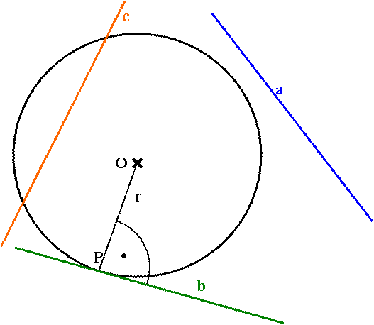

<html xmlns:v="urn:schemas-microsoft-com:vml"
xmlns:o="urn:schemas-microsoft-com:office:office"
xmlns:w="urn:schemas-microsoft-com:office:word"
xmlns="http://www.w3.org/TR/REC-html40">

<head>
<meta http-equiv=Content-Type content="text/html; charset=windows-1250">
<meta name=ProgId content=Word.Document>
<meta name=Generator content="Microsoft Word 10">
<meta name=Originator content="Microsoft Word 10">
<link rel=File-List href="kor31pl_elemei/filelist.xml">
<link rel=Edit-Time-Data href="kor31pl_elemei/editdata.mso">
<!--[if !mso]>
<style>
v\:* {behavior:url(#default#VML);}
o\:* {behavior:url(#default#VML);}
w\:* {behavior:url(#default#VML);}
.shape {behavior:url(#default#VML);}
</style>
<![endif]-->
<title>Matek fogalmak,tételek az ált.isk-ban</title>
<!--[if gte mso 9]><xml>
 <o:DocumentProperties>
  <o:Author>PL</o:Author>
  <o:Template>Normal</o:Template>
  <o:LastAuthor>Pleszkán László</o:LastAuthor>
  <o:Revision>3</o:Revision>
  <o:TotalTime>129</o:TotalTime>
  <o:Created>2006-01-06T11:05:00Z</o:Created>
  <o:LastSaved>2006-01-06T11:05:00Z</o:LastSaved>
  <o:Pages>1</o:Pages>
  <o:Words>91</o:Words>
  <o:Characters>628</o:Characters>
  <o:Company>PL</o:Company>
  <o:Lines>5</o:Lines>
  <o:Paragraphs>1</o:Paragraphs>
  <o:CharactersWithSpaces>718</o:CharactersWithSpaces>
  <o:Version>10.2625</o:Version>
 </o:DocumentProperties>
</xml><![endif]--><!--[if gte mso 9]><xml>
 <w:WordDocument>
  <w:Zoom>80</w:Zoom>
  <w:SpellingState>Clean</w:SpellingState>
  <w:GrammarState>Clean</w:GrammarState>
  <w:HyphenationZone>21</w:HyphenationZone>
  <w:BrowserLevel>MicrosoftInternetExplorer4</w:BrowserLevel>
  <w:ValidateAgainstSchemas/>
  <w:SaveIfXMLInvalid>false</w:SaveIfXMLInvalid>
  <w:IgnoreMixedContent>false</w:IgnoreMixedContent>
  <w:AlwaysShowPlaceholderText>false</w:AlwaysShowPlaceholderText>
 </w:WordDocument>
</xml><![endif]-->
<style>
<!--
 /* Style Definitions */
 p.MsoNormal, li.MsoNormal, div.MsoNormal
	{mso-style-parent:"";
	margin:0cm;
	margin-bottom:.0001pt;
	mso-pagination:widow-orphan;
	font-size:12.0pt;
	font-family:"Times New Roman";
	mso-fareast-font-family:"Times New Roman";}
p.MsoBodyText, li.MsoBodyText, div.MsoBodyText
	{margin-top:0cm;
	margin-right:0cm;
	margin-bottom:6.0pt;
	margin-left:0cm;
	mso-pagination:widow-orphan;
	font-size:12.0pt;
	font-family:"Times New Roman";
	mso-fareast-font-family:"Times New Roman";}
a:link, span.MsoHyperlink
	{color:blue;
	text-decoration:underline;
	text-underline:single;}
a:visited, span.MsoHyperlinkFollowed
	{color:blue;
	text-decoration:underline;
	text-underline:single;}
pre
	{margin:0cm;
	margin-bottom:.0001pt;
	mso-pagination:widow-orphan;
	font-size:10.0pt;
	font-family:"Courier New";
	mso-fareast-font-family:"Times New Roman";}
span.GramE
	{mso-style-name:"";
	mso-gram-e:yes;}
@page Section1
	{size:595.3pt 841.9pt;
	margin:70.85pt 70.85pt 70.85pt 70.85pt;
	mso-header-margin:35.4pt;
	mso-footer-margin:35.4pt;
	mso-paper-source:0;}
div.Section1
	{page:Section1;}
-->
</style>
<!--[if gte mso 10]>
<style>
 /* Style Definitions */
 table.MsoNormalTable
	{mso-style-name:"Normál táblázat";
	mso-tstyle-rowband-size:0;
	mso-tstyle-colband-size:0;
	mso-style-noshow:yes;
	mso-style-parent:"";
	mso-padding-alt:0cm 5.4pt 0cm 5.4pt;
	mso-para-margin:0cm;
	mso-para-margin-bottom:.0001pt;
	mso-pagination:widow-orphan;
	font-size:10.0pt;
	font-family:"Times New Roman";}
table.MsoTableGrid
	{mso-style-name:"Rácsos táblázat";
	mso-tstyle-rowband-size:0;
	mso-tstyle-colband-size:0;
	border:solid windowtext 1.0pt;
	mso-border-alt:solid windowtext .5pt;
	mso-padding-alt:0cm 5.4pt 0cm 5.4pt;
	mso-border-insideh:.5pt solid windowtext;
	mso-border-insidev:.5pt solid windowtext;
	mso-para-margin:0cm;
	mso-para-margin-bottom:.0001pt;
	mso-pagination:widow-orphan;
	font-size:10.0pt;
	font-family:"Times New Roman";}
</style>
<![endif]--><!--[if gte mso 9]><xml>
 <w:LatentStyles DefLockedState="false" LatentStyleCount="156">  </w:LatentStyles>
</xml><![endif]--><!--[if gte mso 9]><xml>
 <o:shapedefaults v:ext="edit" spidmax="48130">
  <o:colormru v:ext="edit" colors="#fc9,#090,#eaeaea"/>
  <o:colormenu v:ext="edit" fillcolor="#eaeaea"/>
 </o:shapedefaults></xml><![endif]--><!--[if gte mso 9]><xml>
 <o:shapelayout v:ext="edit">
  <o:idmap v:ext="edit" data="1"/>
 </o:shapelayout></xml><![endif]-->
</head>

<body bgcolor="#EAEAEA" lang=HU link=blue vlink=blue style='tab-interval:35.45pt'>

<div class=Section1>

<div align=center>

<table class=MsoTableGrid border=0 cellspacing=0 cellpadding=0 width=662
 style='width:496.15pt;border-collapse:collapse;mso-yfti-tbllook:480;
 mso-padding-alt:0cm 5.4pt 0cm 5.4pt'>
 <tr style='mso-yfti-irow:0;mso-yfti-firstrow:yes'>
  <td valign=top style='padding:0cm 5.4pt 0cm 5.4pt'>
  <p class=MsoNormal align=center style='text-align:center'><b><span
  style='font-size:14.0pt;font-family:Arial;color:#990033;letter-spacing:2.5pt'><o:p>&nbsp;</o:p></span></b></p>
  </td>
 </tr>
 <tr style='mso-yfti-irow:1'>
  <td valign=top style='padding:0cm 5.4pt 0cm 5.4pt'>
  <p class=MsoNormal><b><span style='font-size:14.0pt;font-family:Arial;
  color:maroon;letter-spacing:2.5pt'><o:p>&nbsp;</o:p></span></b></p>
  </td>
 </tr>
 <tr style='mso-yfti-irow:2'>
  <td valign=top style='padding:0cm 5.4pt 0cm 5.4pt'>
  <p class=MsoNormal align=center style='text-align:center'><span
  style='font-size:14.0pt;font-family:Arial'><!--[if gte vml 1]><v:shapetype
   id="_x0000_t75" coordsize="21600,21600" o:spt="75" o:preferrelative="t"
   path="m@4@5l@4@11@9@11@9@5xe" filled="f" stroked="f">
   <v:stroke joinstyle="miter"/>
   <v:formulas>
    <v:f eqn="if lineDrawn pixelLineWidth 0"/>
    <v:f eqn="sum @0 1 0"/>
    <v:f eqn="sum 0 0 @1"/>
    <v:f eqn="prod @2 1 2"/>
    <v:f eqn="prod @3 21600 pixelWidth"/>
    <v:f eqn="prod @3 21600 pixelHeight"/>
    <v:f eqn="sum @0 0 1"/>
    <v:f eqn="prod @6 1 2"/>
    <v:f eqn="prod @7 21600 pixelWidth"/>
    <v:f eqn="sum @8 21600 0"/>
    <v:f eqn="prod @7 21600 pixelHeight"/>
    <v:f eqn="sum @10 21600 0"/>
   </v:formulas>
   <v:path o:extrusionok="f" gradientshapeok="t" o:connecttype="rect"/>
   <o:lock v:ext="edit" aspectratio="t"/>
  </v:shapetype><v:shape id="_x0000_i1025" type="#_x0000_t75" style='width:395.25pt;
   height:343.5pt'>
   <v:imagedata src="kor31pl_elemei/image001.emz" o:title=""/>
  </v:shape><![endif]--><![if !vml]><![endif]><b><span
  style='color:maroon;letter-spacing:2.5pt'><o:p></o:p></span></b></span></p>
  </td>
 </tr>
 <tr style='mso-yfti-irow:3'>
  <td valign=top style='padding:0cm 5.4pt 0cm 5.4pt'>
  <p class=MsoNormal><b><i style='mso-bidi-font-style:normal'><span
  style='font-size:14.0pt;font-family:Arial;color:black;letter-spacing:2.5pt'><o:p>&nbsp;</o:p></span></i></b></p>
  </td>
 </tr>
 <tr style='mso-yfti-irow:4'>
  <td valign=top style='background:#00CCFF;padding:0cm 5.4pt 0cm 5.4pt'>
  <p class=MsoNormal style='line-height:150%'><b style='mso-bidi-font-weight:
  normal'><span style='font-size:14.0pt;line-height:150%;font-family:Arial;
  color:blue'><o:p>&nbsp;</o:p></span></b></p>
  <p class=MsoNormal style='line-height:150%'><span class=GramE><b
  style='mso-bidi-font-weight:normal'><span style='font-size:14.0pt;line-height:
  150%;font-family:Arial;color:blue'>a</span></b></span><b style='mso-bidi-font-weight:
  normal'><span style='font-size:14.0pt;line-height:150%;font-family:Arial;
  color:blue'><span style='mso-spacerun:yes'>  </span>egyenes:</span></b><b
  style='mso-bidi-font-weight:normal'><span style='font-size:14.0pt;line-height:
  150%;font-family:Arial'><span style='mso-spacerun:yes'>   </span>Nincs közös
  pontja a körrel.<span style='mso-spacerun:yes'>  </span><o:p></o:p></span></b></p>
  <p class=MsoNormal style='line-height:150%'><b style='mso-bidi-font-weight:
  normal'><span style='font-size:14.0pt;line-height:150%;font-family:Arial'><o:p>&nbsp;</o:p></span></b></p>
  <p class=MsoNormal style='margin-left:77.8pt;text-align:justify;text-indent:
  -75.95pt;line-height:150%'><b style='mso-bidi-font-weight:normal'><span
  style='font-size:14.0pt;line-height:150%;font-family:Arial;color:green'>b
  egyenes<span class=GramE>:<span style='color:windowtext'><span
  style='mso-spacerun:yes'>   </span>Érintõ</span></span></span></b><b
  style='mso-bidi-font-weight:normal'><span style='font-size:14.0pt;line-height:
  150%;font-family:Arial'> egyenes: A körnek és az egyenesnek pontosan egy
  közös pontja van. Ez a pont az érintési pont (P).<i style='mso-bidi-font-style:
  normal'> </i>Az érintési pontba húzott sugár (r), mindig merõleges az érintõ
  egyenesre.<o:p></o:p></span></b></p>
  <p class=MsoNormal style='text-align:justify;text-indent:18.0pt;line-height:
  150%'><b><span style='font-size:14.0pt;line-height:150%;font-family:Arial;
  color:maroon;letter-spacing:2.5pt'><o:p>&nbsp;</o:p></span></b></p>
  </td>
 </tr>
 <tr style='mso-yfti-irow:5'>
  <td valign=top style='padding:0cm 5.4pt 0cm 5.4pt'>
  <p class=MsoNormal><b><i style='mso-bidi-font-style:normal'><span
  style='font-size:14.0pt;font-family:Arial;color:black;letter-spacing:2.5pt'><o:p>&nbsp;</o:p></span></i></b></p>
  <p class=MsoNormal><b><i style='mso-bidi-font-style:normal'><span
  style='font-size:14.0pt;font-family:Arial;color:black;letter-spacing:2.5pt'><o:p>&nbsp;</o:p></span></i></b></p>
  </td>
 </tr>
 <tr style='mso-yfti-irow:6'>
  <td valign=top style='padding:0cm 5.4pt 0cm 5.4pt'>
  <p class=MsoNormal style='text-align:justify;text-indent:18.0pt'><b
  style='mso-bidi-font-weight:normal'><i style='mso-bidi-font-style:normal'><span
  style='font-size:14.0pt;font-family:Arial'>Belátható, hogy a b egyenes
  pontjai közül a P pont van a legközelebb az O ponthoz, mivel rajta van a
  körvonalon, míg az egyenes többi pontja a körvonalon kívül helyezkedik el. Az
  O pontból a b egyenes pontjaihoz húzott szakaszok közül az OP a legrövidebb.
  Adott külsõ pontból az egyenes pontjaihoz húzott szakaszok közül a
  legrövidebb mindig merõleges az egyenesre.<o:p></o:p></span></i></b></p>
  <p class=MsoNormal align=center style='text-align:center'><b><span
  style='font-size:14.0pt;font-family:Arial;color:maroon;letter-spacing:2.5pt'><o:p>&nbsp;</o:p></span></b></p>
  </td>
 </tr>
 <tr style='mso-yfti-irow:7'>
  <td valign=top style='padding:0cm 5.4pt 0cm 5.4pt'><pre style='margin-left:
  40.6pt'><b><span style='font-size:14.0pt;font-family:Arial;color:maroon;
  letter-spacing:2.5pt'><o:p>&nbsp;</o:p></span></b></pre></td>
 </tr>
 <tr style='mso-yfti-irow:8'>
  <td valign=top style='background:#00CCFF;padding:0cm 5.4pt 0cm 5.4pt'>
  <p class=MsoNormal style='margin-top:6.0pt;margin-right:0cm;margin-bottom:
  0cm;margin-left:77.8pt;margin-bottom:.0001pt;text-align:justify;text-indent:
  -77.8pt;tab-stops:35.45pt'><b style='mso-bidi-font-weight:normal'><span
  style='font-size:14.0pt;font-family:Arial;color:#FF6600'><o:p>&nbsp;</o:p></span></b></p>
  <p class=MsoNormal style='margin-top:6.0pt;margin-right:0cm;margin-bottom:
  0cm;margin-left:77.8pt;margin-bottom:.0001pt;text-align:justify;text-indent:
  -77.8pt;tab-stops:35.45pt'><b style='mso-bidi-font-weight:normal'><span
  style='font-size:14.0pt;font-family:Arial;color:#FF6600'>c egyenes<span
  class=GramE>:<span style='color:windowtext'><span
  style='mso-spacerun:yes'>     </span>Szelõ</span></span></span></b><b
  style='mso-bidi-font-weight:normal'><span style='font-size:14.0pt;font-family:
  Arial'> egyenes: A körnek és az egyenesnek pontosan két közös pontja van. <o:p></o:p></span></b></p>
  <pre style='margin-left:62.4pt;text-indent:-59.55pt'><b><span
  style='font-size:14.0pt;font-family:Arial;color:maroon;letter-spacing:2.5pt'><o:p>&nbsp;</o:p></span></b></pre></td>
 </tr>
 <tr style='mso-yfti-irow:9;mso-yfti-lastrow:yes'>
  <td valign=top style='padding:0cm 5.4pt 0cm 5.4pt'><pre style='text-align:
  center'><b><span style='font-size:14.0pt;font-family:Arial;color:maroon;
  letter-spacing:2.5pt'><o:p>&nbsp;</o:p></span></b></pre><pre
  style='text-align:center'><b><span style='font-size:14.0pt;font-family:Arial;
  color:maroon;letter-spacing:2.5pt'><o:p>&nbsp;</o:p></span></b></pre></td>
 </tr>
</table>

</div>

<pre style='text-align:center'><o:p>&nbsp;</o:p></pre></div>

</body>

</html>
